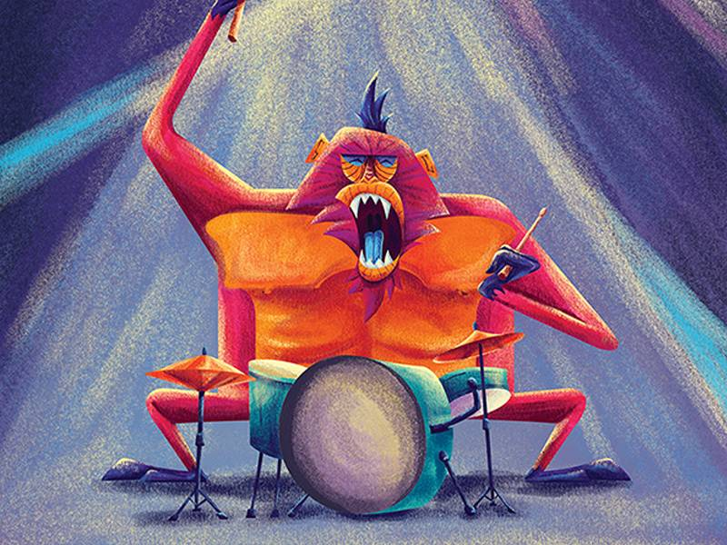

Ils font palpiter la musique et les coeurs de ceux qui l'écoutent. Les batteurs, traditionnellement installés à l'arrière de la scène, sont pourtant l'essence même de la musique : le rythme. Un tempo qui peut se faire très speed, très puissant dans les genres musicaux que nous avons choisi d'aborder aujourd'hui : le rock, le hard rock et leurs enfants. Voici notre sélection des meilleurs batteurs de tous les temps. La liste ne peut être exhaustive, et si vous considérez qu'elle peut-être améliorée, n'hésitez pas à nous signaler vos héros des baguettes !
LES 3 MEILLEURS BATTEURS DU MONDE ET LEURS SOLOS INOUBLIABLES

JOHN BONHAM
Un sacré bonhomme, ce Bonham. John Bonham, alias Bonzo, génie enchaîné, déchaîné, à ses fûts, a fait les plus belles heures des lives de "Led Zeppelin". Exemple, ce morceau de bravoure sur "Moby Dick" au Royal Albert Hall en 1970. Sur cette performance purement bluffante (mais juste à titre d’exemple !), il frappe même les peaux à mains nues. Erigé au rang de "meilleur batteur de tous les temps" par le lectorat de "Rolling Stone" en 1973, ce natif du Worcestershire, mort à seulement 32 ans, reste une référence pour tous les amateurs de (très) bonnes baguettes.

KEITH MOON
Au cas (improbable) où vous n’auriez jamais entendu parler des "Who", honte à vous car vous ne regardez même pas les Experts. Volontairement, nous avons choisi le titre (devenu générique emblématique de la série) "Who are you" de la bande de Roger Daltrey. Voici deux vidéos, dont l’une isole l’enregistrement de l’intro et du groove de feu le diaboliquement talentueux Keith Moon. De quoi donner une petite idée de la sauvage virtuosité de celui qui a inspiré Animal, le batteur survolté du Muppet Show.
PHIL RUDD
Précis, puissant, généreux dans son style et énorme dans son groove, Phil Rudd est l’un des sales gosses qui ont fait le succès d'"AC/DC". L’Australien d’aujourd’hui 62 ans a certes eu des problèmes avec Malcolm Young mais sa participation à la bande emblématique du hard rock aura été déterminante.
Ginger Baker
Attention, culte. "Cream" qui outre un certain Eric Clapton et Jack Bruce, tenait un sacré batteur en la personne de Ginger Baker nous a légué "Sunshine of your love" (1977) où, sans doute, l’homme derrière ses percussions, souvent novatrices pour l’époque, était au sommet de son art. Le Britannique a ensuite rejoint "Blind Faith" (toujours avec Clapton), puis créé la formation de jazz-rock "Ginger Baker’s Air Force" et a notamment collaboré avec Fela Kuti.
Ringo Starr
Parmi les Fab Four, il n’est (tout étant relatif) certainement pas le premier qui viendra à l’esprit du grand public, mais Ringo Starr fut un sacrément bel atout du quatuor historique. Que serait, par exemple, "Come together" sans son sens animal du tempo ? Et l’on ne peut nier qu’il a contribué à l’évolution du style des "Beatles".
Dave Grohl
C'est pas drôle. Dave Grohl est si bien dans ses pompes de musicien que, de retour de concert, il vous donne envie de brûler vos instruments. Alors qu'il maîtrise déjà la guitare, la basse, le piano et chante (tant qu'à faire...), il est avant tout reconnu comme un batteur de folie. Cet autodidacte (du moins en ce qui concerne les bases des percussions) ultra-doué a donné toute leur puissance de feu à "Nirvana", "Queens of the stone age" ou encore "Them crooked vultures" (passons sur ses nombreuses collaborations et le fait qu'il a tout bêtement créé les "Foo fighters" !).